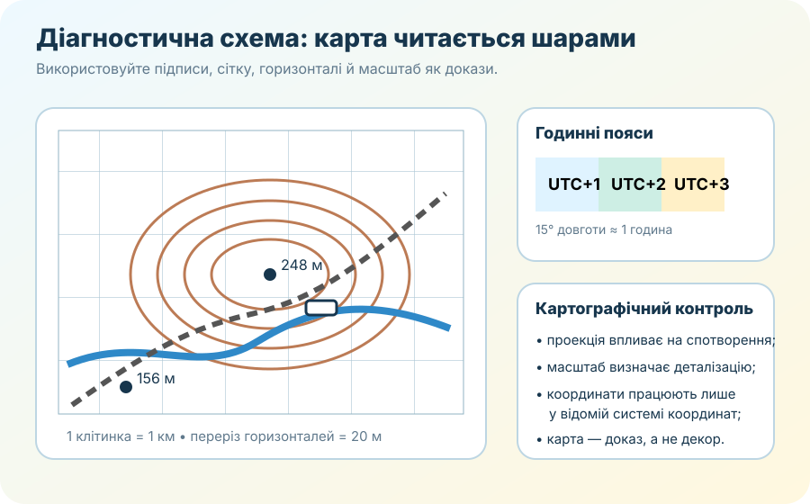

0–3 хв
Перед початком
Заповніть дані. Після цього відкриється робота.
Робота розрахована приблизно на 30 хвилин + 5 хвилин самооцінювання.
3–6 хв
Картографічна опора

Ключові дані вже є на схемі. Відповіді, які можна отримати з карти, не варто замінювати здогадками.
Що можна використовувати
Чернетку, калькулятор, атлас або попередні конспекти — якщо вчитель не встановив інші правила. Мета діагностики — побачити, чи вмієте Ви застосувати поняття.
Уважно: географічні координати й прямокутні X/Y — не те саме; поясний, місцевий і цивільний час — теж не одне поняття.
6–15 хв
Блок А. Картографічне мислення — 4 бали
1 бал1. Київ розташований поблизу 30° сх. д. Який теоретичний часовий пояс відповідає цьому меридіану?
1 бал2. Яка проекція найменш придатна для точного порівняння площ територій у високих широтах?
1 бал3. Який ресурс найкраще використати, якщо треба оцінити рельєф і висоти маршруту?
1 бал4. Що обов’язково треба знати, щоб однозначно інтерпретувати прямокутні координати X/Y?
15–24 хв
Блок Б. Обчислення й читання топокарти — 4 бали
1 бал5. Точка А — 156 м, точка Б — 248 м. Яка відносна висота Б щодо А?
1 бал6. Між точками 3 км по горизонталі і 4 км по вертикалі. Яка пряма відстань?
1 бал7. Де схил крутіший?
1 бал8. Різниця довгот двох пунктів — 15°. Приблизна різниця місцевого сонячного часу становить:
24–31 хв
Блок В. Застосування — 4 бали
1 бал9. Для евакуаційного маршруту під час підтоплення найкраща стратегія:
1 бал10. Якщо частина країни геометрично ближча до сусіднього часового поясу, це означає, що там обов’язково інший офіційний час?
1 бал11. Яке твердження про масштаб правильне?
1 бал12. Найкраща послідовність роботи з картою:
Коротке пояснення для вчителя
Оберіть будь-яке одне своє рішення з роботи й поясніть його 2–4 реченнями через «твердження → доказ → пояснення».
31–34 хв
Самооцінювання
Найкраще вмію
Найважче
Мій наступний крок
34–35 хв
Результат і наступний крок
Після уроку
Для повторення
Якщо результат показав прогалину, поверніться до уроків №4–11 у каталозі 8 класу й повторіть саме той тип задач, який дав помилку.
Відкрити каталог 8 класу